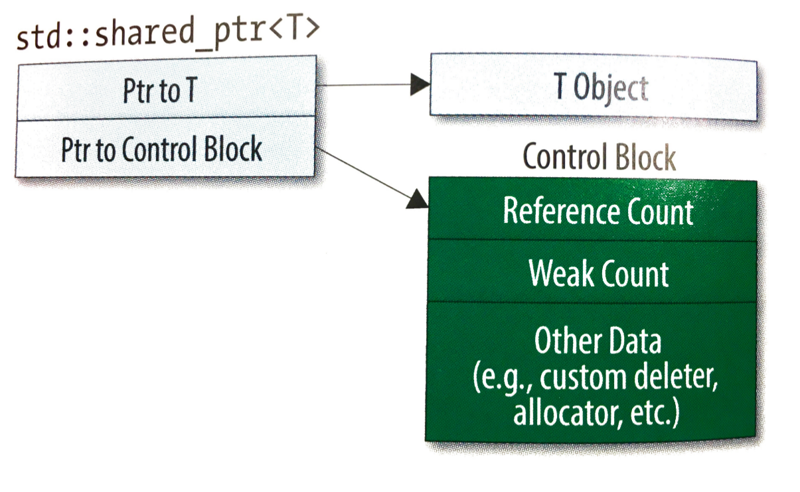

Smart pointers
In the previous section, we have talked about pointers and memory management. As you probably know, dynamic memory management can bring quite some headaches, such as
- memory leaks, when allocated memory is not deallocated
- ownership issues: who is in charge of deallocating memory?
Luckily, C++11 comes with smart pointers, aimed at helping you out in exactly those situations.
Pitfalls of pointers
Let's look at some use cases of pointers:
Declaring a pointer - what's wrong?
int* a; // declares a pointer that can point to an integer value
SolutionClick to expand
We can use pointers to allocate memory on the heap
int* c = new int; // allocate memory for an integer value in the heap
//and assign its memory address to this pointer
What does this do?
int** d = &a;
SolutionClick to expand
And then there are of course pointers to objects
MyObject* e = new MyObject(); // allocate memory for MyObject
// and assign its memory address to the pointer e
/* Using a pointer */
int f = *c; // dereferencing a pointer and assigning the pointed
// value to another integer variable
e->DoSomething(); // dereferencing a pointer and calling
// the method DoSomething() of the instance of MyObject
// pointed by e
Memory leaks
memory leak is a type of resource leak that occurs when
- memory which is no longer needed is not released
- an object is stored in memory but cannot be accessed by the running code.
What is the problem with this code?
Below is a snippet of analysis code. What is wrong with it ?
void MyAnalysisTask::UserExec()
{
TLorentzVector* v = nullptr;
for (int i = 0; i < InputEvent()->GetNumberOfTracks(); i++) {
AliVTrack* track = InputEvent()->GetTrack(i);
if (!track) continue;
v = new TLorentzVector(track->Px(),
track->Py(), track->Pz(), track->M());
// my analysis here
std::cout << v->Pt() << std::endl;
}
delete v;
}
SolutionClick to expand
Array or single value?
Besides being at a risk of memory leaks, pointers can lead to truly ambiguous situations when using arrays, since a pointer can point to a single value or to an array, there is no way to infer it from its declaration. There is a different syntax to destroy (= deallocate, free) the pointed object for arrays and single objects as we have seen in the previous section. Look at the following snippet of code, that illustrates this ambiguity:
AliVTrack* FilterTracks();
void UserExec()
{
TLorentzVector *vect = new TLorentzVector(0,0,0,0);
double *trackPts = new double[100];
AliVTrack *returnValue = FilterTracks();
// here use the pointers
delete vect;
delete[] trackPts;
delete returnValue; // or should I use delete[] ??
}
Ownership issues: double deletes
Each memory allocation should match a corresponding deallocation
Difficult to keep track of all memory allocations/deallocations in a large project
Ownership of the pointed memory is ambiguous: multiple deletes of the same object may occur
AliVTrack* FilterTracks();
void AnalyzeTracks(AliVTrack* tracks);
void MyAnalysisTask::UserExec()
{
AliVTrack* tracks = FilterTracks();
AnalyzeTracks(tracks);
delete[] tracks; // should I actually delete it??
//or was it already deleted by AnalyzeTracks?
}
Smart Pointers
Clear (shared or exclusive) ownership of the pointed object
memory is deallocated when the last pointer goes out of scope
Available since C++11
Exclusive-Ownership Pointers: unique_ptr
Automatic garbage collection with (i.e. it uses the same resources as a raw pointer)
unique_ptrowns the object it pointsMemory automatically released when
unique_ptrgoes out of scope or when itsreset(T* ptr)method is calledOnly one
unique_ptrcan point to the same memory address
Unique pointers in the wild
Example 1
void MyFunction() {
std::unique_ptr<TLorentzVector> vector(new TLorentzVector(0,0,0,0));
std::unique_ptr<TLorentzVector> vector2(new TLorentzVector(0,0,0,0));
// use vector and vector2
// dereferencing unique_ptr works exactly as a raw pointer
std::cout << vector->Pt() << std::endl;
// the line below does not compile!
// vector = vector2;
// cannot assign the same address to two unique_ptr instances
vector.swap(vector2); // however I can swap the memory addresses
// this also releases the memory previously pointed by vector2
vector2.reset(new TLorentzVector(0,0,0,0));
// objects pointed by vector and vector2 are deleted here
}
Example 2
void MyAnalysisTask::UserExec()
{
for (int i = 0; i < InputEvent()->GetNumberOfTracks(); i++) {
AliVTrack* track = InputEvent()->GetTrack(i);
if (!track) continue;
std::unique_ptr<TLorentzVector> v(new TLorentzVector(track->Px(),
track->Py(), track->Pz(), track->M()));
// my analysis here
std::cout << v->Pt() << std::endl;
// no need to delete
// v is automatically deallocated after each for loop
}
}
No memory leak here! :)
Shared-Ownership Pointers: shared_ptr
Automatic garbage collection with some CPU and memory overhead
The pointed object is collectively owned by one or more
shared_ptrinstancesMemory automatically released the last
shared_ptrgoes out of scope or when it is re-assigned

Shared pointers in the wild
Example 1
void MyFunction() {
std::shared_ptr<TLorentzVector> vector(new TLorentzVector(0,0,0,0));
std::shared_ptr<TLorentzVector> vector2(new TLorentzVector(0,0,0,0));
// dereferencing shared_ptr works exactly as a raw pointer
std::cout << vector->Pt() << std::endl;
// assignment is allowed between shared_ptr instances
vector = vector2;
// the object previously pointed by vector is deleted!
// vector and vector2 now share the ownership of the same object
// object pointed by both vector and vector2 is deleted here
}
Example 2
class MyClass {
public:
MyClass();
private:
void MyFunction();
std::shared_ptr<TLorentzVector> fVector;
};
void MyClass::MyFunction() {
std::shared_ptr<TLorentzVector> vector(new TLorentzVector(0,0,0,0));
// assignment is allowed between shared_ptr instances
fVector = vector;
// the object previously pointed by fVector (if any) is deleted
// vector and fVector now share the ownership of the same object
// here vector goes out-of-scope
// however fVector is a class member so the object is not deleted!
// it will be deleted automatically when this instance of the class
// is deleted (and therefore fVector goes out-of-scope) :)
}
Some word of caution on `shared_ptr'
What is the problem in this case?
You have created smart code, using smart pointers. It looks like this
void MyClass::MyFunction() {
auto ptr = new TLorentzVector(0,0,0,0);
std::shared_ptr<TLorentzVector> v1 (ptr);
std::shared_ptr<TLorentzVector> v2 (ptr);
}
still, something is wrong with it, do you know what ?
SolutionClick to expand
Exercise
Below is a very long page of exercises related to using smart pointers, varying in difficulty. Click on 'solution' to see the answer to the questions. You can put the questions 'in action' by writing small C++ programs, but they are also answerable by just inspecting the code snippets.
Question
The following statements contain a mistake. Can you spot it?
void some_function() {
std::shared_ptr<int> p1(new int(42));
std::shared_ptr<int> p2(p1.get());
}
SolutionClick to expand
Question
The following contains another mistake. What is wrong?
void some_function() {
std::unique_ptr<int> p3(new int[42]);
}
SolutionClick to expand
Question
When would you use a unique_ptr versus a shared_ptr?
SolutionClick to expand
Question
Suppose you have a class which returns a pointer which the user may wish to store in a shared_ptr. What type should you return?
SolutionClick to expand
Question
Consider the following code:
int foo() { throw std::runtime_error("Normally conditional"); return 5; }
void bar(std::shared_ptr<int> int, int val)
{}
void example2()
{
bar(std::shared_ptr<int>(new int(42)), foo());
}
Why could calling example2 result in a memory leak?